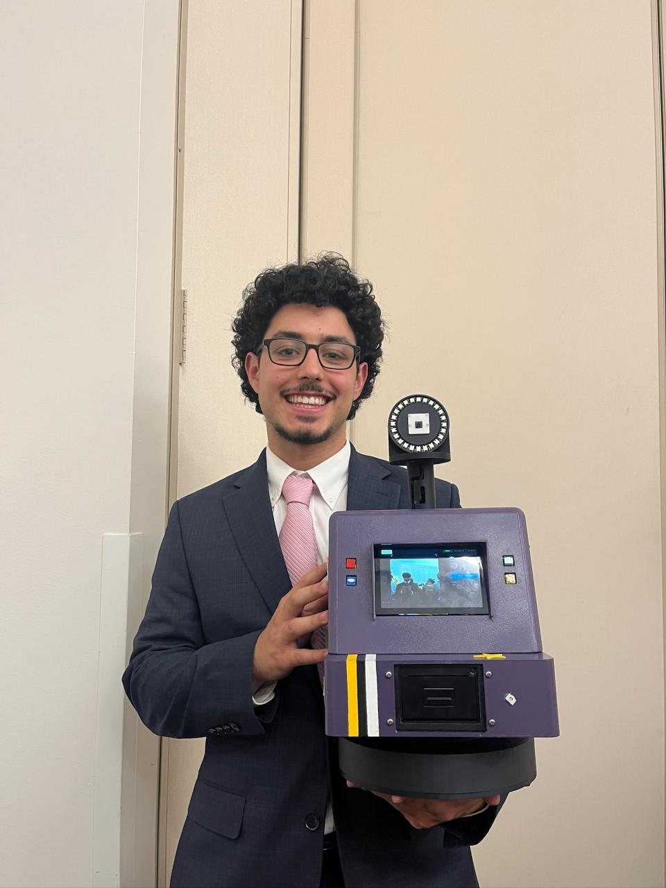
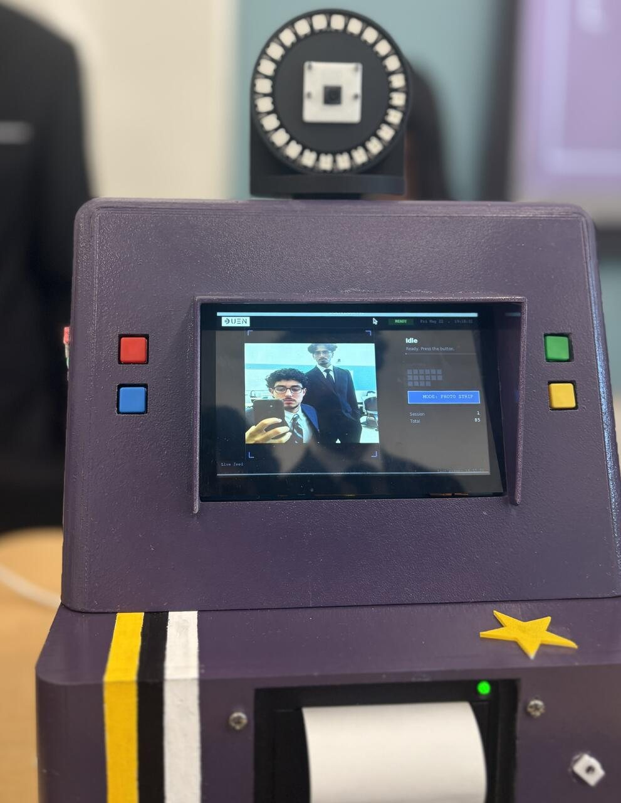
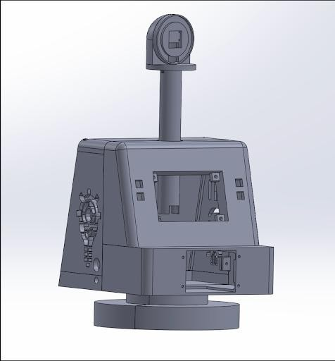
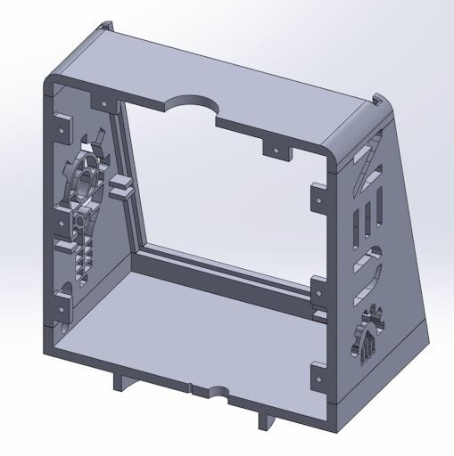
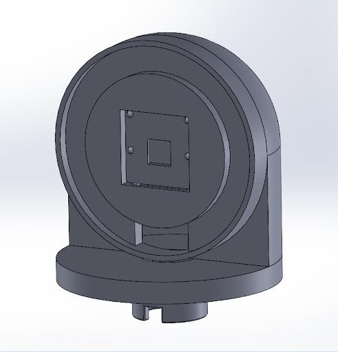

Team project
DUEN engineering club · 22-person team · Spring 2026
FlashBack: 270° Panoramic Photo Booth
A portable, battery-powered photo booth that rotates on a servo-driven turntable, takes 16 overlapping photos, stitches them into a 270° panorama, and prints it on a thermal printer as a physical keepsake.

The problem
Photos taken at club events get buried in a camera roll and never looked at again. Our team was asked to build something that solved a real problem for UC Davis students, and we went after that one: a booth that hands you a physical print you can actually keep, wide enough to fit a whole group of people standing in an arc around it.
We had six weeks, 22 people, and a working prototype that had to survive being carried to events and run off a battery for an evening.
What I did
Mechanical design
- Redesigned the load path. The original design hung the rotating chassis weight on the servo shaft. I proposed moving it onto a ball bearing ring so the servo only supplies torque, not structural support, which also eliminated a motor-induced rattle that was showing up in the photos.
- Selected the counterweights and tested stability with the camera mast fully extended, since that's the configuration where the booth is closest to tipping.
- Designed the electromechanical packaging, where the Raspberry Pi 4, battery, buck converters, fuse box, and thermal printer physically sit inside the chassis;I also planned the wire routing, including a honeycomb shelf that carries cabling while still letting air move through the enclosure.
- Contributed to concept generation, the overall form, and the engineering drawings, and took part in the SolidWorks assembly design review.
Electronics & power
- Calculated the power budget and battery runtime to support a 6-hour event on one charge, working with buck converters to step voltages down and a fuse box for protection.
- Implemented PWM servo control from the Pi's GPIO, the firmware converts a target angle into a pulse width across a 500–2500 µs range on a 270° servo.
- Debugged hardware faults by isolating the layer. A servo that wouldn't rotate turned out to be a power and grounding issue, not code. Failed thermal prints traced back to printer supply voltage rather than the print routine.
- Found a Raspberry Pi short circuit minutes before technical review, swapped in a backup board, and kept the demo on schedule.
Why I took this on
Our 22-person team was almost entirely mechanical engineers: 14 ME (or related) majors, one EE, and no CS majors. The computer vision and electronics work wasn't going to happen unless someone learned it, so I took it on. It was the least familiar thing I'd done, and it became the part of the project I'm most glad I worked on. Without this my most impressive project would not have happened.
Software & computer vision
- Developed the panorama stitching pipeline in Python and OpenCV. Getting from "sometimes works" to consistent 270° output meant tuning three things together: frame overlap (how many capture angles, and how far apart), exposure and white-balance locking so brightness doesn't shift between frames, and servo settle time before each shot.
- Built the touchscreen UI in Tkinter with live camera preview, three photo modes, LED ring light controls, and multi-copy printing, driven by a phase state machine from countdown through capture sweep, stitch, and print.
- Handled thread safety: long work runs on background threads with locks so the live preview and the capture sweep never contend for the camera, and all UI mutations are marshalled back onto the main thread.
- Programmed the 61-LED addressable ring light modes and drove the ESC/POS thermal printer over USB, converting stitched images into dithered black-and-white output the printer can actually reproduce.
- Built a headless mode so the entire UI and state machine run on a laptop with fakes standing in for the camera, stitcher, printer, LEDs, and servo. That let the software be developed and tested while the hardware was still being printed.
Systems integration
- I was the link between the mechanical and EECS subteams. The clearest example of why that mattered: servo settle time drives image blur, which drives whether stitching succeeds. Speeding up the sweep to make the booth feel responsive directly degraded the panorama. That's a mechanical parameter with a software consequence, and it only gets found by someone looking at both.
- Practiced root-cause analysis across domains, determining whether a given failure was mechanical, electrical, or software before the team committed time to the wrong fix.
A materials lesson
Several printed parts warped after being left outside while drying paint in the Davis sun. It was a useful reminder that material selection has to account for the environment a part sits in, not just the loads it carries.
Gallery
The build





What I'd change
Shrink the rotating section. We rotated more mass than we needed to, which raised the inertia the servo had to accelerate and decelerate. That's what forced the long settle times that fought against image sharpness. A smaller rotating assembly with the heavy components moved to the stationary base would let the sweep run faster and stitch more reliably at the same time, instead of trading one against the other.
I'd also give the drawings more time. We produced them under deadline pressure and it shows; proper datums and callouts on the fits would have caught assembly problems before parts went on the printer.
Reference
By the numbers
| Panorama coverage | 270° |
|---|---|
| Frames per panorama | 16 overlapping captures |
| Capture sequence | 4.48 s total, ~0.28 s per frame |
| Servo | 270° travel, PWM 500–2500 µs |
| Ring light | 61 addressable LEDs, external 5 V supply |
| Battery | 12.6 V LiPo, 6-way fuse box |
| Power rails | 5 V Pi · 8 V printer · 6 V servo (buck converters) |
| Target battery runtime | 6 hours of event use |
| Compute | Raspberry Pi 4 |
| Printer | ESC/POS thermal, USB |
| Build cost | $339.60 |
| Team / duration | 22 people, 6 weeks |
More detail
The team published a full project manual covering the power system, user guide, manufacturing, materials, and maintenance — including the parts of the build I didn't work on.
Built and field-tested at DUEN events, March to May 2026. No further work planned.